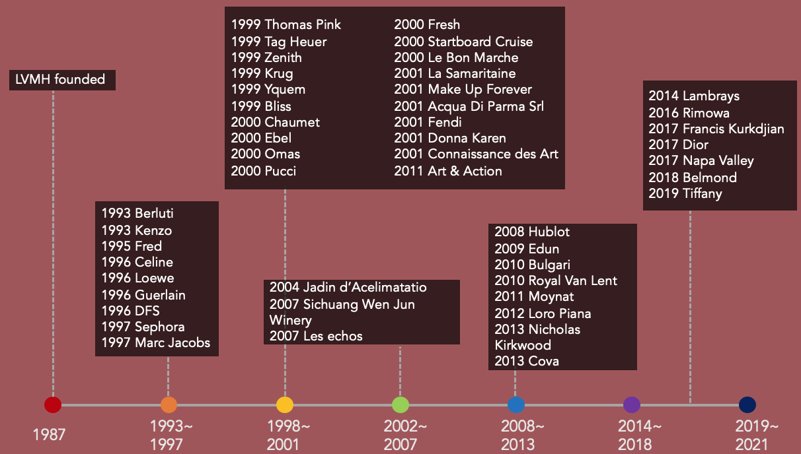

In 1984, Arnault mortgaged his family business to purchase Dior fashion, which renewed his enthusiasm for pursuing luxury brands worldwide, so after he came into power, Arnault changed the business strategy from self establishment to merger and acquisition. Then, the group began to soar.
3.2 Developments: Peaks brought by Mergers and Acquisition
Combined with the earnings growth, capital operation, and business expansion, it is easy to find that 2 fast expansion: 1999-2000 (compound growth rate of 35.5%) and 2008-2010 respectively match the late period of the Asian financial crisis and the world financial crisis, 10 which pointed out that Arnault always purchased at the best buying point.
In detail, each peak had a different strategy that emphasized merger and acquisition. For instance, in 1993-1997 the company focused on the development of Fashion & Leather Goods, and in the second and third period’s acquisition, Fashion and Jewelry & Watches were their key points. However, whenever the stage is, Fashion is the most important one among all so that the company could reduce the dependency on Louis Vuitton and Dior. Besides constantly reinforcing their traditional business items, LVMH also expanded revenue through buying more brands that specialized in hard luxury at the end of the 20th century, such as Bulgari and Chaumet. Target audiences of hard luxury are more concentrated in the high net worth clients which distinguish them from consumers of Fashion & Leather Goods. This business development strategy helped LVMH reduce potential risks which were similar to the function of a hedge fund.
3.3 Business performances from revenue, net profit, number of stores, and grown efficiency
This multi-brand strategy helped LVMH grow steadily. For instance, after the financial crisis in 2008, revenue growth from Selective Retailing and Fashion & Leather Goods recouped from the loss from Watches and Jewelry, and Wine and Spirits, which still maintained LVMH’s growth of revenue. Even in the slump of 2009, the company’s shrinkage was less than that of Kering and Richemont. 6,7,10, 24
The growth in the number of stores was steady too, but the increase rate was mostly lower than the revenue to decrease and manage the potential risks. From 2008 to 2019, the group shop number increased from 2314 to 4915, with a compound annual growth rate of 7.03%, and 7.59% lower than the rate of 2019’s revenue.10
In the past five years, the gross profit margin of LVMH kept in between 65% to 67%. 25 Though this margin was not the highest in the short-term compared with Kering, historical data demonstrated the stability of LVMH. 26~37
created with
HTML Website Builder .